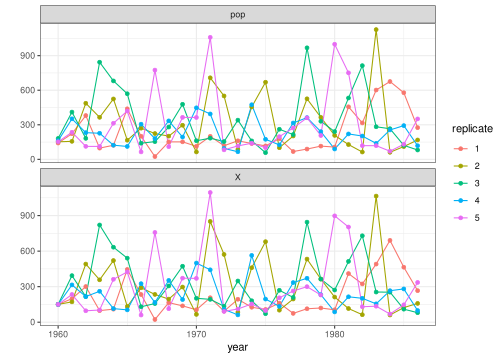
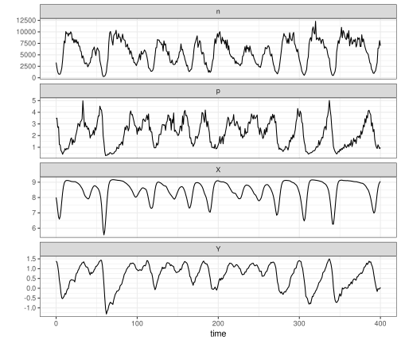

PartiallyObservedMarkovProcesses.jl
The package is a Julia implementation of the pomp package for R.
Package Features
- Implementation of POMP models
- Simulation
- Particle filter
- Workhorses (low-level interface to basic model components)
- Helper functions
- Examples
Function Documentation
Implementation of POMP models
Basic constructor
PartiallyObservedMarkovProcesses.pomp — Function
pomp is the constructor for the PompObject class.
pomp(
data;
t0, times, timevar,
params,
accumvars,
rinit, rprocess,
rmeasure, logdmeasure,
rprior, logdprior,
userdata
)Arguments
data: observations. The default constructor takes a vector of NamedTuples as data. One can also supply an AbstractDataFrame.t0: zero time, t₀.times: observation times. Ifdatais supplied as a DataFrame (or AbstractDataFrame),timesshould be a Symbol which denotes the time variable in the DfataFrame. NB: the types oftimesandt0must match, or an error will be generated.timevar: optional symbol. Name of the time variable.params: parameters. A NamedTuple or vector of NamedTuples.accumvars: a NamedTuple of state variables to be reset (usually to zero) immediately before each simulation stage.rinit: simulator of the latent-state distribution at t₀. This component should be a function that takes parameters and, optionally,t0, the initial time. It should return a NamedTuple of state variables.rprocess: simulator of the latent-state process. This component should be a plugin (seeeuler,onestep, anddiscrete_time).rmeasure: simulator of the measurement process. This component should be a function that takes states, parameters, and, optionally,t, the current time. It should return a NamedTuple of observable variables.logdmeasure: log pdf of the measurement process. This component should be a function that takes data, states, parameters, and, optionally,t, the current time. It should return a scalar.rprior: simulator of the prior distribution on parameters. This component should be a function that takes parameters and returns a NamedTuple of parameters. It should return a NamedTuple of parameters.logdprior: log pdf of the prior distribution on parameters. This component should be a function that takes parameters. It should return a scalar.userdata: an optional NamedTuple containing elements that will be furnished to each of the basic model components.
Given an AbstractPompObject, object, pomp(object) returns the underlying concrete PompObject. Calling pomp(object; args...) returns a copy of object, modified according to the keyword arguments args....
pomp(object::AbstractPompObject; params=missing, accumvars=missing, rinit=missing, rprocess=missing, rmeasure=missing, logdmeasure=missing)This form returns a modified version of object. Individual basic components can be modified or removed. The default is to leave them unchanged.
rprocess plugins
PartiallyObservedMarkovProcesses.euler — Function
euler(stepfun; dt)The function stepfun should advance the state by an arbitrary time-increment. The time-increment will be chosen so that equal-sized steps of duration at most dt are taken over any desired interval.
PartiallyObservedMarkovProcesses.discrete_time — Function
discrete_time(stepfun; dt = 1)The function stepfun should advance the state by one time unit. The magnitude of the time unit is dt.
PartiallyObservedMarkovProcesses.onestep — Function
onestep(stepfun)The function stepfun will be called once to advance the latent-state process over an interval of arbitrary duration.
PartiallyObservedMarkovProcesses.vectorfield — Function
vectorfield(vf, integration_alg; integrator_args...)The function vf should return a vector containing the components of the vectorfield in the same order in which they are passed to vf.
The integration_alg argument specifies the integration algorithm to be used. See DifferentialEquations.jl for more on the choices. The keyword arguments in integrate_args... are passed to the DifferentialEquations.solve() function.
Simulation
PartiallyObservedMarkovProcesses.simulate — Function
simulate(object; nsim = 1, params, rinit, rprocess, rmeasure, args...)Simulate the POMP. Returns an array of PompObjects. At least the rinit, rprocess, and rmeasure basic components, are needed.
PartiallyObservedMarkovProcesses.simulate_array — Function
simulate_array(object; nsim = 1, params, rinit, rprocess, rmeasure, args...)Simulate the POMP. At least the rinit, rprocess, and rmeasure basic components, are needed. Return an array containing the simulated sample paths.
Particle filter
PartiallyObservedMarkovProcesses.pfilter — Function
pfilter(object; Np = 1, params, rinit, rprocess, logmeasure, args...)pfilter runs a basic particle filter. At least the rinit, rprocess, and logdmeasure basic components are needed. args... can be used to modify or unset additional fields.
pfilter(object; Np = object.Np, args...)Running pfilter on a PfilterdPompObject re-runs the particle filter. One can adjust the parameters, number of particles (Np), or pomp model components.
Workhorses
PartiallyObservedMarkovProcesses.rinit — Function
rinit(object; t0=timezero(object), params=coef(object), nsim=1)rinit is the workhorse for the simulator of the initial-state distribution.
Arguments
object: the PompObjectparams: a NamedTuple of parameters or vector of NamedTuplest0: the time at whichrinitis to be simulated. This should be a single scalar.nsim: the number of simulations desired.
PartiallyObservedMarkovProcesses.rinit! — Function
rinit!(object, x0; t0=timezero(object), params = coef(object))rinit! is the in-place version of the rinit workhorse.
PartiallyObservedMarkovProcesses.rprocess — Function
rprocess(object; x0, t0 = timezero(object), times=times(object), params = coef(object))rprocess is the workhorse for the simulator of the process
If there is no user-supplied rprocess component, the dynamics are trivial.
PartiallyObservedMarkovProcesses.rprocess! — Function
rprocess!(object, x; x0 = init_state(object), t0 = timezero(object), times=times(object), params = coef(object))rprocess! is the in-place version of the rprocess workhorse.
PartiallyObservedMarkovProcesses.rmeasure — Function
rmeasure(object; x, times=times(object), params=coef(object))rmeasure is the workhorse for the simulator of the measurement distribution.
PartiallyObservedMarkovProcesses.logdmeasure — Function
logdmeasure(object; times=times(object), y=obs(object),
x=states(object), params=coef(object))logdmeasure is the workhorse for the evaluator of the log measurement density.
PartiallyObservedMarkovProcesses.logdmeasure! — Function
logdmeasure!(object, ell; times=times(object), y=obs(object), x=states(object), params=coef(object))logdmeasure! is the in-place version of the logdmeasure workhorse. If no logdmeasure component has been specified, this returns 0 for all inputs.
PartiallyObservedMarkovProcesses.logdprior — Function
logdprior(object; params=coef(object))logdprior is the workhorse for the evaluator of the log prior density. If no prior is specified, the logdprior returns 0 for all inputs.
PartiallyObservedMarkovProcesses.logdprior! — Function
logdprior!(object, ell; params=coef(object))logdprior! is the in-place version of the logdprior workhorse.
PartiallyObservedMarkovProcesses.rprior — Function
rprior(object; params=coef(object), nsim = 1)rprior is the workhorse for the simulator of the prior distribution. If nsim > 1, then a matrix is returned.
Helper functions
PartiallyObservedMarkovProcesses.coef — Function
coef(object,names...)coef extracts the parameters stored in an AbstractPompObject or array thereof.
PartiallyObservedMarkovProcesses.obs — Function
obs(object)obs extracts the vector of observables from a PompObject.
PartiallyObservedMarkovProcesses.states — Function
states(object)states extracts the latent state trajectory of a PompObject.
PartiallyObservedMarkovProcesses.init_state — Function
init_state(object)init_state extracts the latent state at time t0.
PartiallyObservedMarkovProcesses.times — Function
times(object)times extracts the time vector from a PompObject.
PartiallyObservedMarkovProcesses.timezero — Function
timezero(object)timezero extracts the zero-time (t0) from a PompObject.
Examples
The Gompertz model
PartiallyObservedMarkovProcesses.Examples.gompertz — Function
gompertz()gompertz is a PompObject containing Parus major data and a simple Gompertz population model. The population model has a single scalar state variable, $X_t$, which obeys
\[X_t = X_{t-1}^S\,K^{1-S}\,\varepsilon_t,\]
where $S = e^{-r\delta{t}}$ and $\varepsilon_t \sim \mathrm{LogNormal}(0,\sigma_p)$. The time-step is one unit: $\delta{t}=1$. The data are assumed to be drawn from a log-normal distribution. In particular,
\[\mathrm{pop}_t \sim \mathrm{LogNormal}(\log{X_t},\sigma_m).\]
Parameters
- r: the growth rate
- K: the equilibrium population density
- X₀: the initial population density
- σₚ: process noise s.d.
- σₘ: measurement noise s.d.
View the Parus data:
using PartiallyObservedMarkovProcesses, RCall
using PartiallyObservedMarkovProcesses.Examples
P = gompertz()
d = melt(P)
R"""
$d |>
pivot_longer(-year) |>
ggplot(aes(x=year,y=value))+
geom_line()+
facet_wrap(~name,scales="free_y",ncol=1)+
labs(y="")+
theme_bw() -> pl
print(pl)
"""
View a few representative simulations:
using PartiallyObservedMarkovProcesses, RCall
using PartiallyObservedMarkovProcesses.Examples
P = gompertz()
Q = simulate(P;params=(r=4.5,K=210.0,σₚ=0.7,σₘ=0.1,X₀=150.0),nsim=5)
d = melt(Q,:parset,:rep)
R"""
$d |>
pivot_longer(-c(year,rep,parset)) |>
ggplot(aes(x=year,y=value,group=rep,color=factor(rep)))+
geom_line()+
geom_point()+
facet_wrap(~name,scales="free_y",ncol=1)+
labs(y="",color="replicate")+
theme_bw() -> pl
print(pl)
"""
A simple SIR model
PartiallyObservedMarkovProcesses.Examples.sir — Function
sir(
β = 0.5, γ = 0.25, N = 10000,
ρ = 0.3, k = 10,
S₀ = 0.9, I₀ = 0.01, R₀ = 0.1,
δt = 0.1, t₀ = 0.0,
times = range(start=1.0,stop=90,step=1.0)
)sir returns a PompObject containing simulated SIR data.
Parameters
- β: transmission rate
- γ: recovery rate
- N: population size
- ρ: reporting rate
- k: overdispersion coefficient (negative binomial size parameter)
- S₀, I₀, R₀: relative proportions of susceptible, infected, recovered (respectively) in the population at t=t₀.
- δt: Euler stepsize
- t₀: zero-time
- times: vector of observation times

The Rosenzweig-MacArthur model
PartiallyObservedMarkovProcesses.Examples.rmca — Function
rmca(
r = 1, K = 1e4, A = 1e3,
b = 1e-3, c = 1, m = 0.8,
V = 100, σ = 0.01,
N₀ = 3000, P₀ = 4, t₀ = 0.0,
δt = 0.01,
times=range(start=0,stop=500,step=0.2)
)Parameters
- r: intrinsic growth rate of prey
- K: carrying capacity for prey
- A: half-saturation prey density
- c: predator foraging rate
- b: predator yield (predators born per prey item killed)
- m: predator death rate
- V: system size
- σ: measurement noise magnitude
- N₀, P₀: initial densities
- t₀: zero-time
- δt: Euler stepsize
- times: vector of observation times
Observables
- n: prey density
- p: predator density
State variables
- $X = \log(N)$
- $Y = \log(P)$
Details
rmca returns a PompObject containing simulated data from a Rosenzweig-MacArthur model implemented as an Itô diffusion. Specifically, if $N$ and $P$ are prey and predator densities, respectively, then $dN = dG - dC - dS$ and $dP = b dS - dM$, where
\[\begin{aligned} dG &= r N dt + \sqrt{\frac{1}{V} r N} dW_1 \\ dC &= \frac{r N^2}{K} dt + \sqrt{\frac{1}{V} \frac{r N^2}{K}} dW_2 \\ dS &= \frac{c N P}{1+N/A} dt + \sqrt{\frac{1}{V} \frac{c N P}{1+N/A}} dW_3 \\ dM &= m P dt + \sqrt{\frac{1}{V} m P} dW_4 \\ \end{aligned}\]
Here, the $dW_i$ are increments of independent standard Wiener processes. Thus, the process noise scales demographically. Specifically, the system size, $V$, converts the densities $N$, $P$ into numbers. It controls the relative magnitude (coefficient of variation) of the demographic process noise. Moreover, $V$ determines a lower threshold on the population sizes, such that if ever $N V < 1$ or $P V < 1$, the population is taken to be extinct. Otherwise, it plays no role in the dynamics. The measurement error is assumed to scale environmentally:
\[\begin{aligned} n &\sim \mathrm{LogNormal}(\log{N},\sigma) \\ p &\sim \mathrm{LogNormal}(\log{P},\sigma) \\ \end{aligned}\]
Note that, in the limit $V\to\infty$, the Itô diffusion becomes the ordinary differential equation
\[\begin{aligned} \frac{dN}{dt} &= r N \left(1-\frac{N}{K}\right) - \frac{c N P}{1+N/A} \\ \frac{dP}{dt} &= \frac{b c N P}{1+N/A} - m P \\ \end{aligned}\]
which is the classical Rosenzweig-MacArthur model.
In this system, the predator is inviable unless $R = \frac{bcA}{m} > 1$. Even if the predator is viable, the environment is too impoverished to support predators unless $R>1+\frac{A}{K}$. If the environment is rich enough, and if moreover $R>\frac{1+\frac{A}{K}}{1-\frac{A}{K}}$, then the nontrivial equilibrium of the system is unstable. For the default parameters, we have $R = 1.25$ and $\frac{A}{K} = 0.1$, so the latter condition holds.
PartiallyObservedMarkovProcesses.Examples.drmca — Function
drmca(
r = 1, K = 1e4, A = 1e3,
b = 1e-3, c = 1, m = 0.8,
σ = 0.01,
N₀ = 3000, P₀ = 4, t₀ = 0.0,
times = range(start=0,stop=500,step=0.2),
integrator = AutoTsit5(Rosenbrock23())
)Parameters
- r: intrinsic growth rate of prey
- K: carrying capacity for prey
- A: half-saturation prey density
- c: predator foraging rate
- b: predator yield (predators born per prey item killed)
- m: predator death rate
- σ: measurement noise magnitude
- N₀, P₀: initial densities
- t₀: zero-time
- times: vector of observation times
- integrator: integration algorithm.
Observables
- n: prey density
- p: predator density
State variables
- $X = \log(N)$
- $Y = \log(P)$
Details
drmca returns a PompObject containing simulated data from a deterministic Rosenzweig-MacArthur model implemented as a vectorfield. Specifically, the model is the classical Rosenzweig-MacArthur model
\[\begin{aligned} \frac{dN}{dt} &= r N \left(1-\frac{N}{K}\right) - \frac{c N P}{1+N/A} \\ \frac{dP}{dt} &= \frac{b c N P}{1+N/A} - m P \\ \end{aligned}\]
In this system, the predator is inviable unless $R = \frac{bcA}{m} > 1$. Even if the predator is viable, the environment is too impoverished to support predators unless $R>1+\frac{A}{K}$. If the environment is rich enough, and if moreover $R>\frac{1+\frac{A}{K}}{1-\frac{A}{K}}$, then the nontrivial equilibrium of the system is unstable. For the default parameters, we have $R = 1.25$ and $\frac{A}{K} = 0.1$, so the latter condition holds.
A sample simulation.
P = rmca(σ=0.1,times=range(0,400.0,step=1.0))
d = melt(P)
R"""
$d |>
pivot_longer(-time) |>
ggplot(aes(x=time,y=value))+
geom_path()+
facet_wrap(~name,scales="free_y",ncol=1)+
labs(y="")+
theme_bw() -> pl
print(pl)
"""
P = drmca(σ=0.1,times=range(0,400.0,step=1.0))
d = melt(P)
R"""
$d |>
pivot_longer(-time) |>
ggplot(aes(x=time,y=value))+
geom_path()+
facet_wrap(~name,scales="free_y",ncol=1)+
labs(y="")+
theme_bw() -> pl
print(pl)
"""
Multivariate Brownian motion
PartiallyObservedMarkovProcesses.Examples.brownian_motion — Function
brownian_motion(;times, t₀ = 0, x₀, σ, τ)returns a PompObject for a multivariate Brownian motion process with observations at times. The zero-time is t₀ and the starting state at that time is x₀. The intensity of the Brownian motion is given by the matrix σ. The measurement error is multivariate normal with variance τ^⊤ τ.